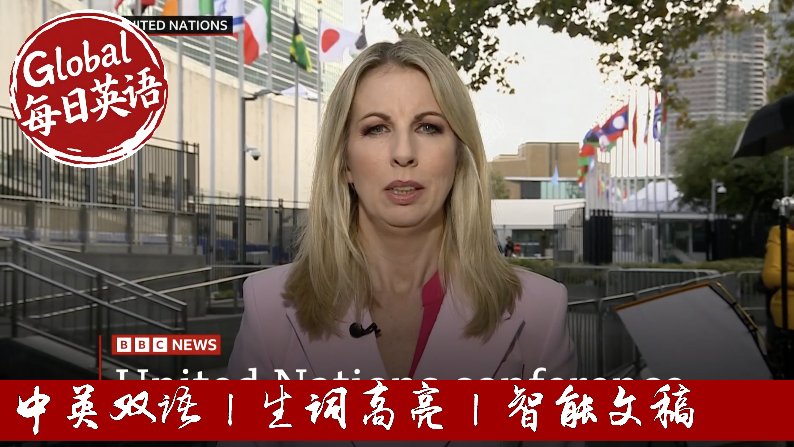

【BBC News 20250923 法国在联合国大会上承认巴勒斯坦国｜吉米脱口秀恢复播出】
Summary: France announces formal recognition of a Palestinian state at a UN General Assembly meeting focused on the two-state solution. The move aligns France with the UK, Canada, Australia, and Portugal, but is opposed by the US, Germany, and Italy. As leaders gather in New York, the conference calls for an end to Gaza fighting and hostage release, while deadly strikes continue and a severe humanitarian crisis worsens. Separately, ABC reinstates Jimmy Kimmel's show after a suspension over controversial comments.
摘要： 法国在联合国大会关于两国方案的会议上宣布正式承认巴勒斯坦国。此举使法国与英国、加拿大、澳大利亚和葡萄牙立场一致，但遭到美国、德国和意大利的反对。各国领导人齐聚纽约，会议呼吁结束加沙战斗并释放人质，而致命袭击仍在继续，人道主义危机急剧恶化。此外，美国广播公司因吉米·坎摩尔争议言论停播其节目后，现已决定恢复播出。

⏱️ Estimated Reading Time: 36 min.
📚 四级生词 📚 六级生词 📚 雅思生词 📚 托福生词 📚 专八生词 📚 SAT生词 📚 考研生词 📚 GRE生词
I'm Katrina Perry at the United Nations headquarters in New York, and this is BBC World News America.
President Emmanuel Macron says France will formally recognize a Palestinian state joining the UK and a host of other countries to have done so.
The conference on a two-state solution to the Israeli-Palestinian conflict comes as world leaders gather here in New York for the top level United Nations General Assembly.
This Jimmy Kimmel is returning to his ABC show a week after he was pulled off air over his Charlie Kirk comments.
Hello, you're very welcome to this special edition of World News America here in New York, where world leaders are gathering for the United Nations conference.
We've been discussing a two-state solution to the Israeli-Palestinian conflict.
French President Emmanuel Macron opened that meeting that he's co-chairing with Saudi Arabia, calling for an end to the fighting in Gaza and the release of all hostages still in captivity.
France announced that it is joining the UK, Canada, Australia and Portugal in formally recognizing Palestinian statehood, Germany, Italy and the US say they will not follow suit.
Here's the moment the French President recognized the state of Palestine.
The time has come.
This is why true to the historic commitment of my country to the Middle East, to peace between the Israelis and the Palestinians, this is why I declare that today France recognizes the state of Palestine.
The President of the Palestinian Authority, Mahmoud Abbas, thanked the states for their recognition and laid out his vision for the future of a Palestinian state that does not involve Hamas, he said.
Hamas will have no role in governing.
Hamas and other factions must surrender their weapons to the Palestinian Authority.
What we want is one unified state without weapons, a state with one law and one legitimate security forces.
Palestinians say recognition is about their right to self-determination.
Israel's Prime Minister Benjamin F. Nihahu says any recognition gives a huge reward to terrorism, adding that Israel has doubled Jewish settlements in the West Bank and will continue on such a path.
This comes as thousands of Palestinians continue to flee southwards from Gaza City.
The army has closed an additional temporary evacuation route for Palestinians, which has left the heavily congested coastal road the only way out.
Deadly strikes have continued elsewhere in Gaza.
Health officials say Israeli attacks killed at least 61 people in the last 24 hours.
Iranian reports say that women and children were among those killed in a strike outside a clinic in the Central Al-Burj refugee camp.
Well one displaced Palestinian said he hoped the recognition of Palestine would bring safety and stability, but others reacted more skeptically to the news.
To accomplish a just piece and not just empty words or words that are only for publicity, we want safety and stability to be achieved on the ground for the Palestinian people in Gaza and in the West Bank.
We hope from God for this war and this killing to end, and we call on all world nations, including Britain, to take responsibility to stop this war because it is the main reason of our problems, first and foremost.
Where is the state?
In the street or in the tents?
What state is this that they recognize?
Are we able to find something to eat or a place to stay?
Leave it to God.
Well for more on the latest developments I've been speaking to Dr Abdullah Al-Rabia, he's an advisor to the Royal Saudi Royal Court and is also a supervisor general of KS relief.
What level of aid are you managing to get into Gaza at the moment?
Well from the beginning we have actually started moving our aid to both Arih Rafaq to try to get the aid into Gaza.
We have used an air bridge, sea bridge and land bridge with both food security, health supplies, former and four children.
And unfortunately the aid is more than what the corridors will allow and that's not only for the King of the Moussaiderebi, that's for most of the donors including the UN agencies.
The problem in Gaza has been from day one is the access.
The needs are high, children are actually now suffering from lack of food, they are dying because of starvation and the basic medical supplies that are needed for children.
I'm a pediatric surgeon by training so I know what it takes for a child to go bad and children are very live while they cannot tolerate hunger, they cannot tolerate lack of medications or supplies or vaccinations.
All of those are not available.
And I remember also some of our aid included incubators which we could not get them through because of the codes that they could have dual usage.
So incubators which are basically alive saving for a newborn are not there, hospitals are actually in a bad shape.
And based on that we are always trying to get into Gaza, whether through Rafaq, whether through Jordan, whether through the Air Drop Mechanism.
And sometimes we are locked and everybody was locked.
We hope that the events which are happening in the general assembly including the conference for the two states will bring hope for the Palestinians, bring hope for Gaza.
What do you think can be achieved today?
Israel has slammed these declarations as empty statements far from reality.
What can change?
Well I think what can change this is the determination of the world.
I think what we have been seeing through the efforts of countries like Saudi Arabia, like France and others that we are trying to convince the world that the best solution for the future is the two states.
The two states will bring peace to Israel, to bring peace to Palestine, to bring peace to the region.
And that's what the government of Saudi Arabia is doing.
As a humanitarian and as a doctor I wish that we will see an acceptance to this and we hope that the United States will ultimately support it because that will actually be the best solution for everybody.
And for us to solve the children who are in the process of dying.
Where are Saudi-Israeli relations?
Because obviously prior to October 7th you were close to signing the Abraham Accords.
Well I'm not the foreign minister I'm again humanitarian but the Saudi Arabia is clear about it so the Arabia wants to see the two states solution,
wants to see stability
and wants to see a safe Israel, safe Palestine and safe Middle East.
So this has been clear voice from the government of Saudi Arabia.
If that happens I think we will see Israel is actually not affected or targeted by the region
and being an important country who is safe and stable in the region.
You mentioned the United States there obviously a close ally of Saudi Arabia,
President Trump made a visit there earlier this year
yet they've refused to grant visas to the Palestinian delegation to come here for this meeting.
What do you say as a humanitarian to the U.S. for action at this time?
Well as I mentioned I name him humanitarian so I live in the politics of the politicians
but what I will say to the United States and to President Trump at least allow aid to go in
you have to be a part of saving lives, saving children, saving women
and bringing a smile to those who are in the process of dying.
Well I'm joined here now by Israel's ambassador to the United Nations Danny Danan thanks for being with us here.
Thank you for having me.
Now I know yourself in the U.S. you weren't in at the special summit there you were keeping an eye on things
so 150 countries have now recognized Palestine.
Was there anything that you heard there that would persuade Israel to take a different approach here?
Absolutely not.
When you were the beginning it showed it's theatre, it's a circus, it's detached from reality.
We still have 48 hostages and captivity in Gaza.
Hamas just released a video of one of them
we are aware of the medical condition of the hostages
so we told the respect to President Macron coming here with empty speeches, empty declarations
maybe as a domestic interest that he wants to avoid
but it's not going to support peace that's for sure.
You know we have to finish the job
we have to bring the hostages eliminate Hamas
and then create the conditions for reconstruction
but with Hamas in the game it's not going anywhere.
He did manage to get the Saudis in the Arab countries to call on Hamas to disarm
we heard from Mahmoud Abbas saying Hamas would have no role in a future Palestinian state.
There seems to be some movement on the diplomatic track.
Why is Israel not engaging in that?
Well I beg to differ with you because we heard those statements
but I asked my colleagues here we're exactly going to actually remove Hamas.
We're going to confront Hamas.
Hamas will ignore the statements here
and with respect to President Macron it is our responsibility.
It is on our shoulders now to continue the fight against Hamas
so it's not enough to come and say we don't want Hamas to be in Gaza anymore.
Someone has to go there and do the dirty work for the entire world
and Israel is the only one who is doing it now.
Well they don't view us in those terms of course.
I mean we heard repeatedly from the speakers there about the Palestinian right to self-determination
their right to statehood.
Why is Israel denying that right when so many other countries are standing for it?
Well we can go back to 1947 when the UN granted a state to Israel and to an Arab state and they rejected it.
For years we see rejectionism and radical forces taking over the Palestinian narrative.
And I think now we have to realize that as long as the radicals will be in charge of the Palestinian people nothing will happen on the ground.
Hamas is still in charge of the Gaza.
The PA itself, President Abbas, is not capable of condemning terrorism.
It actually is paying terrorism.
He did say in his speech Hamas will have no role in what may come next.
But he actually pays terrorism.
He has paid to slay terrorism to commit crimes and kill Jews to get a monthly payment for life.
Well I can't speak to that.
We can't verify that here at BBC News.
But is there a point at which, as was said inside the chamber there, that nations need to move on for the sake of peace,
need to have that discussion, have that negotiation,
put all of those safeguards in place to get to a place where there can be two states living side by side where people are not dying as President McPharmuffer.
Well you know it's very nice to move on but we cannot move on when we have hostages in Gaza.
We are the ceasefire with Gaza before October 7th.
Hamas invaded Israel.
That's not known as a gift hope to Palestinians.
But it's also the logical conclusion from a belief in a two state solution.
I mean we've all articulated our belief in a two state solution
and it shouldn't have been a big issue logically to recognize a Palestinian state in that context and not what's standing all of the complexities.
But given the nature of the war that's been waged against innocent Palestinians civilians now,
the slaughter of innocent children,
the massive displacement,
destruction of residential buildings of schools of health services,
the world has to act
and today's conference is a very important moment
because it is in many ways it represents a carrying in call to Israel to stop the war and to Hamas to release the hostages.
Hamas have committed war crimes as well
but the bottom line now is the continuing slaughter of innocent Palestinians must stop
and ultimately Palestinians and Israelis must live side by side together to guarantee everybody's security into the future
and the only effective way that can happen is through a two state solution.
Now that many more EU member states are recognizing the state of Palestine is the time for the EU as a block to do that officially and to do more.
This has been talked of a trade embargo to action.
Well the UN Security Council was also meeting this morning.
It met as a stony request after it accused Russia of violating its air space which Russia denies.
The Security Council remains paralyzed act on this matter due to Russia's veto power on any vote.
The White has announced that President Trump and Zelensky will meet here in New York on Tuesday
and on Wednesday President Zelensky will deliver his address with Russia's foreign minister, Sergey Lavrov scheduled to make remarks on Saturday.
Inside Ukraine emergency workers have been seen battling blazes and clearing rubble in Zapparicia.
The local governor said Russia strikes on the South Eastern City killed three people.
Now Jimmy Kimmelive will return to air on Tuesday that's according to Disney, the apparent company of ABC News.
This comes nearly a week after ABC announced that it was suspending the late night show in death the following comments made by Kimmel about the killing of the right-wing activist Charlie Kirk.
Disney released a statement saying last Wednesday we made the decision to suspend production on the show to avoid further inflaming intense situation at an emotional moment for our country.
It's a decision we made because we felt some of the comments were ill timed and thus insensitive to the end.
We've spent the last days having thoughtful conversations with Jimmy and after those conversations we reached the decision to return the show on Tuesday.
Well joining me now is our correspondent Nick Beak.
Nick, this is quite the decision from ABC from Disney.
It is Katrina because this sparked such a huge debate about freedom of speech in this country last week when the suspension was announced.
Kimmel of course one of the country's most well-known late night hosts, a former host of the Oscars, the Emmys, but his fate appeared to be sealed after the Trump appointed head of the US broadcast regulator said that really he'd acted very inappropriately in his words around the death of Charlie Kirk.
He was accused of appearing to directly mislead the American public.
Just reminder Jimmy Kimmel had said that in his view the Maga gang as he put it were trying to score points from the death of Mr. Kirk and also said that President Trump was reacting to the death how a four-year-old mourns a goldfish.
Now those comments led to ABC suspending the program.
President Trump said he was delighted by that but we've seen this huge backlash just today more than 400 artists, musicians, actors, penning this letter saying that this was a dark moment for free speech in the United States.
Mel Street, Robert De Niro among them but now we have this latest statement from the parent company Disney that you read out there saying that the show will go on.
It's an interesting decision as well Nick, isn't it given the comments that we saw from President Trump in the wake of the decision to take Jimmy Kimmel off air?
You know, sort of he was pointing to some of the other late night show hosts saying perhaps they should be taken off as well and the FCC chair, the person who regulates these things, saying there would be more coming that the media landscape was about to change.
Yeah, absolutely.
There was a lot of support for Jimmy Kimmel, notably some of the other hosts of the big late night shows here in the States.
They gathered around him, they rallied around and there was this support.
On the other side of course, President Trump and a lot of his supporters saying that this was going beyond freedom of speech in their estimation.
President Trump suggesting that in the future broadcasters may have their license taken away if they cross a line, certainly a line in his mind.
And we have had some reaction from various people in the last hour or so.
It has to be said notably on the democratic side for now.
People saying that they welcome the show coming back, for example Chuck Schumer saying this is big Jimmy Kimmel coming back.
This is about fighting for free speech and against these abuses by Donald Trump and Brendan Carr.
A reference there, of course, so that the head of the regulator there who received criticism from those on the democratic side and others as well as support from others, they believed that he was saying it like it is.
But certainly, this is an episode Katrina that has really underlined divisions in this country over media and free speech.
Indeed, they speak there, a correspondent in Washington.
Thank you for that.
Well, let's have a look now at some other news coming to us from around the world.
Police in Ecuador say 13 inmates and a security guard were killed in a clash between rival gang.
Some inmates escaped through a hole in the wall, caused by an explosive device.
Ecuador has been struggling to contain gang violence that has seen it become one of the deadliest Latin American countries.
A sixth charity has dropped the Duchess of York after a 2011 email surfaced in which she called Jeffrey Epstein her quote, supreme friend.
The email appears to contradict her earlier public statement calling her friendship with Epstein a gigantic error of judgment as spokesperson for the Duchess said she wrote it under threat of a defamation suit and still deeply regrets the association.
Now, let's have a look at some other news here in the US, despite skepticism from major scientific institutions, the US Health Department, has linked pregnant women's use of Tylenol to autism in their children.
Tylenol is a popular painkiller in the US, Canada and in some other countries.
Active ingredient is antissophysamine, which is called paracetamol outside North America.
Here's President Trump making that an announcement.
First effective immediately, the FDA will be notifying physicians at the use of a sedum, well, let's see how we say that.
As a menophan, a cedar menophan said okay, which is basically commonly known as Tylenol during pregnancy can be associated with a very increased risk of autism.
So taking Tylenol is not good.
I'll say it, it's not good.
Well, the maker of Tylenol can view has defended the drug safety for pregnant women.
It gave this statement to the BBC.
We believe independent sound science clearly shows that taking this does not cause autism.
We strongly disagree with any suggestion, otherwise and are deeply concerned with the health risk this poses for expecting mothers.
Well, the UK medicines and healthcare regulatory agency reiterated tonight that it is safe to take paracetamol when pregnant and there is no evidence that causes autism.
I'm joined now by the BBC's Medical Editor, Fergus Walsh, to talk a bit more about this.
Fergus, what is the science around the use of this drug in pregnant women?
Well, there have been a lot of studies over the decades.
At one last month, which was a review of 46 studies by Harvard and Mount Sinai School of Medicine, which found some association, a weak link, but not a causal link, perhaps between taking paracetamol as we call it in the UK, Tylenol, the brand name in the US, in pregnancy and autism in children.
But it was an association, not a causal link.
And against that, there was a renowned study in Sweden last year, which looked at the birth records of two and a half million children.
And when it compared siblings, it found that there was no link at all between taking the drug and autism.
But what was really extraordinary, if you thought that was extraordinary enough, what President Trump was claiming there was what he went on to say about vaccines.
So if you have any questions about that, that would be, they work simply extraordinary.
Okay, very good.
Fergus Walsh there.
Thank you very much for that.
The EU's Cybersecurity Agency has confirmed that outages at several European airports this weekend were caused by a ransomware attack.
Here's our cyber correspondent, Joe Tidey.
With planes taking off and landing every minute, minor delays can cause major problems.
And criminals unleashed chaos at the weekend, with a cyber attack aimed at a pinch point in travel, check in desks.
Airports in Brussels, Berlin, Dublin and London Heathrow are among those affected.
These have been cancelled and many others delayed as staff struggle with using manual backup processes to check in passengers, bags and issue boarding passes.
Over the weekend, many travelers felt the full force of the outage.
No information given.
Then people only just got like emails that they've been re-booked on some sort of like random flights.
So it's been a great chaos and it's been quite, I would say, frustrating for.
US firm Collins Aerospace is the maker of Mews, the popular check-in software that's been hit.
Collins Aerospace has been helping airports.
It's not calling the incident a cyber attack and not saying how long it'll take to fix, but the EU's Cybersecurity Agency, Anisa, isn't mincing its words and is calling it a ransomware attack.
Ransomware has become a huge criminal industry, making hundreds of millions of pounds each year by scrambling a victim's computers and demanding a ransom in Bitcoin for the antidote.
You protect yourself by deploying controls to protect your infrastructure and you protect your staff by giving them training so they can understand when someone is trying to abuse the trust that they have when anyone would naturally call up and talk to them.
Here at Heathrow, things are running fairly smoothly as backup processes are betting in, but staff here might have to make do for a while.
An internal memo shared with me suggests that more than a thousand computers might have been affected by the hack and Collins Aerospace is struggling to eject the hackers and relaunch their software.
It's a painful process that staff at Marks & Spencer will be familiar with after it's suffered a high profile ransomware attack in the spring, which took months to recover from and cost hundreds of millions of pounds.
Other cyber attacks at Coop, Harrods and Jaguar Land Rover have all underlined the danger and power of cyber criminals.
Joe Tidey, BBC News.